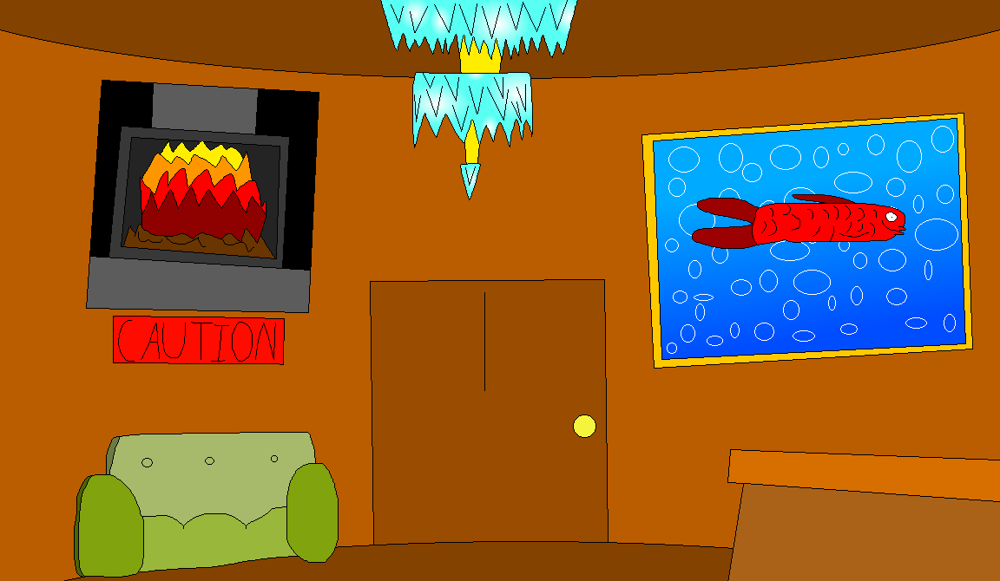

The Maze.
They encountered me in the lobby, they didn't even notice me at first, typical, their always too busy chatting amongst themselves, about whatever crap happened to them or what they are going to do. frankly I can't stand them, they are so annoying, just a bunch of petulant children, they never respect me, they never have, and they likely never will, they will never truly understand what I've been through, my mistakes, my scars.
You know what they actually think of me? they have told me to my face in the past that it is my job to just shut up and guide them, that I can't complain about their behavior, it doesnt matter what they do, they could be vandalizing, they could be attacking the many innocent residents of the house, they could be insulting me, I just can't complain apparently, frankly they disgust me.
They are lucky I haven't just flat out dragged them to their doom, some groups I have led in the past are so brainless they did that part themselves, and VERY few have ever even solved the Maze, once you get in, you can't leave until you find the exit room.
Speaking of the Maze, I really, REALLY do not like it, there is no place for me to stay, it is always changing. it has driven me to insanity in the past, sometimes I really do question why I even decided to become the guide for this thing, after all, what good is a guide when even they don't know where they are going?
Though...I guess I do have the privelage of architect, even though those powers are too slow to be useful in a casual scenario...
Whatever, perhaps I shall lead them on their journey through the Maze, wether or not they come out is a different question entirely...
After much preparation, I led my newest group into...